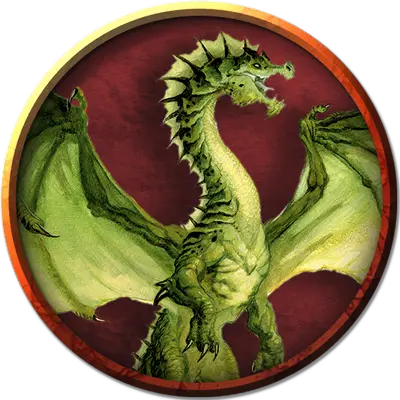

Клаугийльяматар
Claugiyliamatar
Громадный Дракон, законно-злой, именной НИП

Класс Доспеха 21 (природный доспех)
Хиты 385 (22к20 + 154)
Скорость 40 футов, плавая 40 футов, летая 80 футов
| мод | спас | ||
|---|---|---|---|
| СИЛ | 27 | +8 | +8 |
| ЛОВ | 12 | +1 | +8 |
| ТЕЛ | 25 | +7 | +14 |
| мод | спас | ||
|---|---|---|---|
| ИНТ | 20 | +5 | +5 |
| МДР | 17 | +3 | +10 |
| ХАР | 19 | +4 | +11 |
Навыки Восприятие +17, Обман +11, Проницательность +10, Скрытность +8, Убеждение +11
Иммунитет к урону яд
Иммунитет к состояниям отравление
Чувства слепое зрение 60 футов, тёмное зрение 120 футов, пассивное Восприятие 27
Языки Общий, Драконий
Опасность 23 (50000 опыта)
Бонус мастерства +7
Особенности
Амфибия. Клаугийльяматар может дышать и воздухом и под водой.
Легендарное сопротивление (3/день). Если Клаугийльяматар проваливает спасбросок, он может вместо этого сделать спасбросок успешным.
Действия
Мультиатака. Клаугийльяматар может использовать Ужасающее присутствие. Затем он совершает три атаки: одну укусом, и две когтями.
Укус. Рукопашная атака оружием: +15 к попаданию, досягаемость 15 футов, одна цель. Попадание: Колющий урон 19 (2к10 + 8) плюс урон ядом 10 (3к6).
Коготь. Рукопашная атака оружием: +15 к попаданию, досягаемость 10 футов, одна цель. Попадание: Рубящий урон 22 (4к6 + 8).
Хвост. Рукопашная атака оружием: +15 к попаданию, досягаемость 20 футов, одна цель. Попадание: Дробящий урон 17 (2к8 + 8).
Ужасающее присутствие. Все существа на выбор Клаугийльяматара, находящиеся в пределах 120 футов от него и знающие о его присутствии, должны преуспеть в спасброске Мудрости Сл 19, иначе станут испуганными на 1 минуту. Существо может повторять этот спасбросок в конце каждого своего хода, оканчивая эффект на себе при успехе. Если спасбросок существа был успешным, или эффект на нём окончился, оно получает иммунитет к Ужасающему присутствию этого дракона на следующие 24 часа.
Ядовитое дыхание (перезарядка 5–6). Клаугийльяматар выдыхает ядовитый газ 90-футовым конусом. Все существа в этой области должны совершить спасбросок Телосложения Сл 22, получая урон ядом 77 (22к6) при провале, или половину этого урона при успехе.
Использование заклинаний. Клаугийльяматар накладывает одно из следующий заклинаний, не нуждаясь в никаких материальных компонентах, и Харизма является для них базовой характеристикой Клаугийльяматар (Сл спасброска от заклинания 19):
• Неограниченно: обнаружение магии [detect magic], искусство друидов [druidcraft], разговор с животными [speak with animals]
• 2/день каждое: почтовое животное [animal messenger], лечение ран [cure wounds], рассеивание магии [dispel magic], опутывание [entangle], невидимость [invisibility]
• 1/день каждое: усыхание [blight], знание легенд [legend lore] ( накладывается за 1 действие), поиск существа [locate creature], бесследное передвижение [pass without trace], защита от энергии [protection from energy], истинное зрение [true seeing]
Легендарные действия
Дракон может совершить 3 легендарных действия, выбирая из представленных ниже вариантов. За один раз можно использовать только одно легендарное действие, и только в конце хода другого существа. Дракон восстанавливает использованные легендарные действия в начале своего хода.
Обнаружение. Клаугийльяматар совершает проверку Мудрости (Восприятие).
Атака хвостом. Клаугийльяматар совершает атаку хвостом.
Атака крыльями (стоит 2 действия). Клаугийльяматар бьёт своими крыльями. Все существа в пределах 15 футов от дракона должны преуспеть в спасброске Ловкости Сл 23, иначе получат дробящий урон 15 (2к6 + 8) и будут сбиты с ног. После этого Клаугийльяматар может пролететь на расстояние, не превышающее половину скорости полёта.
Описание
См. дополнительно статью: "Бестиарий: Драконы"